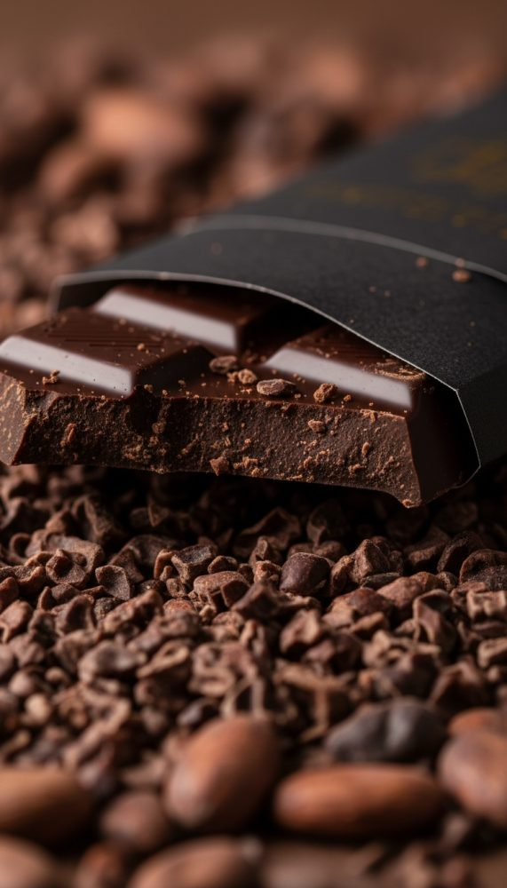
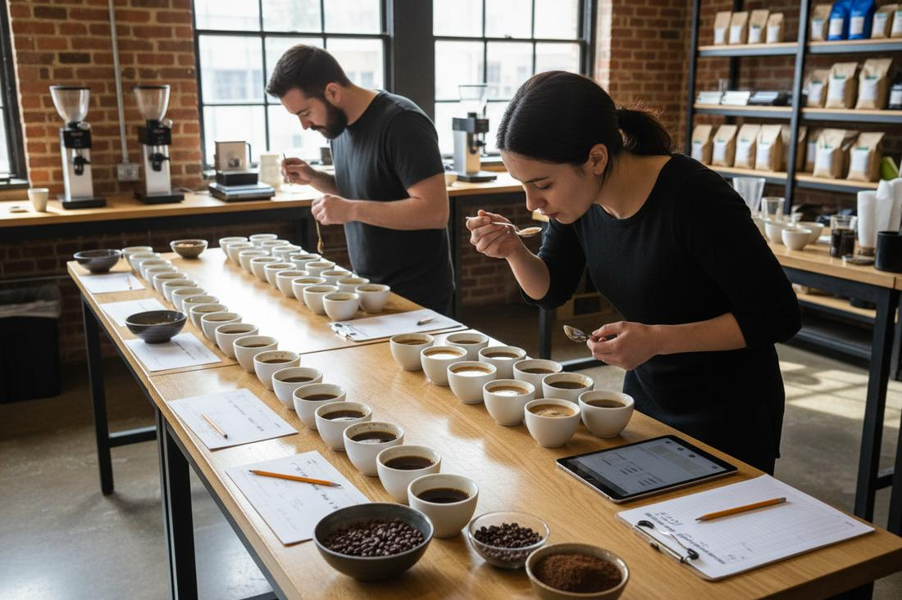

Aroma
O aroma é percebido pelo olfato e contribui para a experiência sensorial do café.
Exemplos
- Floral
- Frutado
- Chocolate
- Caramelo
Cada café possui características únicas. Aprenda a reconhecer aromas, sabores, acidez, doçura e corpo durante a degustação.
O aroma é percebido pelo olfato e contribui para a experiência sensorial do café.
A acidez proporciona vivacidade à bebida e pode lembrar a sensação de diferentes frutas.

A doçura natural é uma característica desejável em muitos cafés especiais, mesmo sem adição de açúcar.
O corpo representa a sensação de peso e textura da bebida na boca.

O sabor combina percepções gustativas e aromáticas, formando o perfil do café.
A finalização é a sensação que permanece na boca após engolir o café.